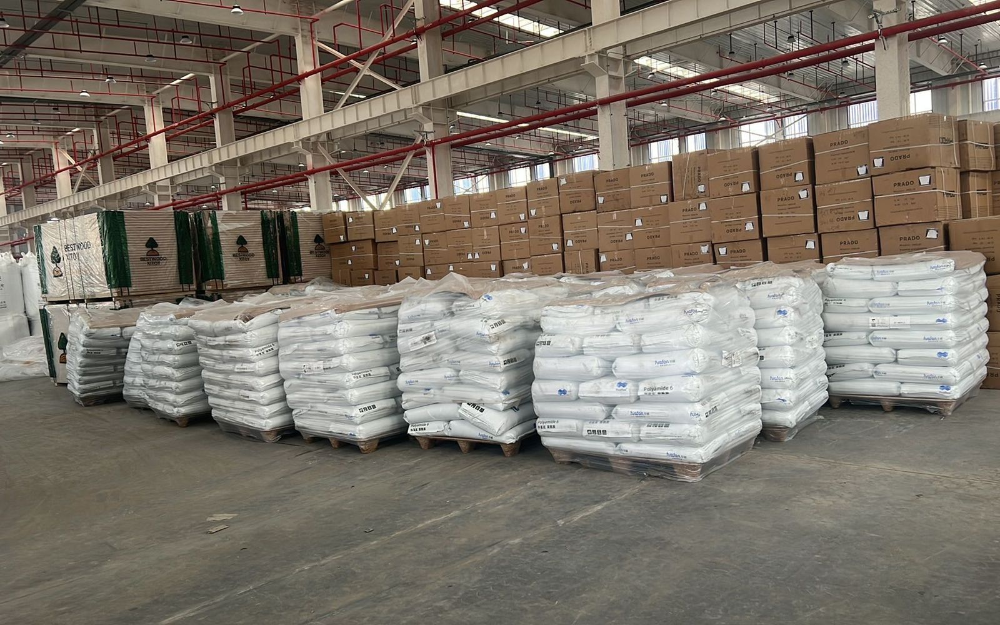

UZ
出口乌兹别克斯坦，先看这5个数据再报价
喀什老凯。货主要发乌兹别克，常拿伊朗询盘的表格来填。表格能用一半。乌恰那条路会过乌兹，但过境乌兹不等于货到了乌兹。五个数据不齐，不要报价。来源：乌兹统计 2025 年 1–9 月；USCS 2025-12-10。
01 五个数据
- 中国—乌兹贸易额 1141.39 亿美元（$114.139bn）。
- 中国占乌兹外贸 19.1%（俄 15.7%，哈 5.8%）。
- 进口增值税 12%（2023 年曾为 15%）。
- 机械加运输约占乌兹进口 33.9%。
- 过境乌兹不是货已到乌兹买家。
HS 税率不在本页列出。运费数字不在本页写出。
02 过境不是卸货
乌恰：新疆→吉尔吉斯→乌兹别克→土库曼→伊朗。货在乌兹是过境。要卸在乌兹，是另一张运单。不要把伊朗线上的 0.4%（吉尔吉斯、按货值）套到乌兹进口税上。0.4% 只在那一条路上，不是运费，也不是乌兹关税。
03 不要套用 22 天
约 22 天是德黑兰场站，不是塔什干，不是到门。本站主产品仍是中国到伊朗卡车。乌兹询盘可以问，数字仍单询。

询盘四样：货名；件数/重量；目的城；乌恰或霍尔果斯。乌兹目的城写在目的城里。